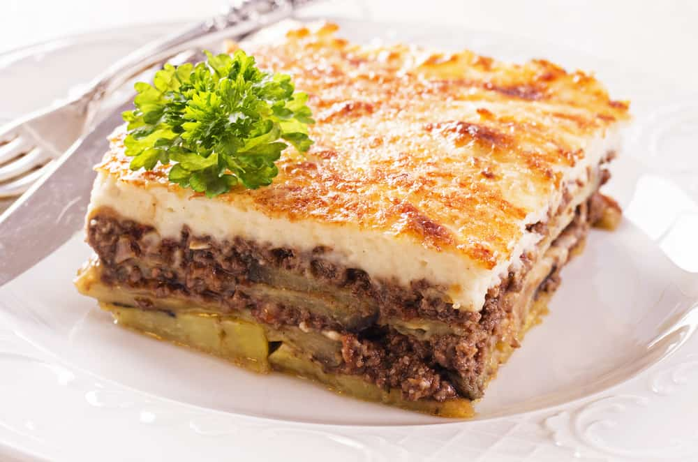
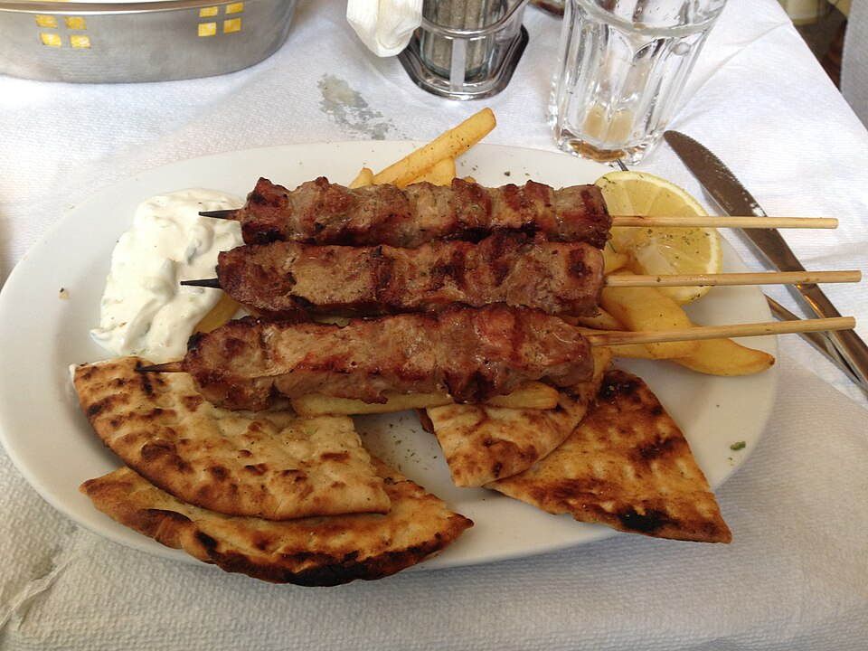

Barko Tavern est une taverne familiale située à Adamas, créée pour vous offrir l'expérience "classique" des vacances grecques à Milos : hospitalité chaleureuse, saveurs faites maison et atmosphère détendue. Depuis 1993, nous perpétuons les recettes traditionnelles de l'île avec des ingrédients simples et beaucoup d'amour.
Ici, vous dégusterez des plats qui semblent vraiment grecs — mijotés, grillades et assiettes de meze à partager. Parfait pour les familles, les groupes d'amis et les couples à la recherche d'un dîner honnête et authentique à Milos.
Vous nous trouverez à Adamas, tout près du port — une étape idéale à votre arrivée sur l'île ou après une journée bien remplie à explorer des plages comme Sarakiniko et Tsigrado. Facile d'accès, sans stress.
L'ambiance est ce que les voyageurs adorent : une cour fraîche, de l'ombre en été, des lumières chaleureuses en soirée, et la sensation d'une véritable taverne grecque. Installez-vous, détendez-vous et laissez Milos faire le reste.
Notre cuisine est purement grecque et traditionnelle, avec un caractère insulaire. Nous cuisinons quotidiennement et privilégions des recettes simples qui mettent en valeur des ingrédients de qualité. Vous trouverez des plats maison, des grillades, des fruits de mer et des meze qui se marient parfaitement avec l'ouzo ou le vin.
Si vous visitez Milos pour la première fois, ne partez pas sans goûter aux spécialités locales comme les pitarakia et la skordolazana. Demandez-nous le "plat du jour" et le poisson frais, selon la saison et la pêche du jour.



L'hospitalité fait partie de l'expérience Barko. Nous vous accueillerons avec le sourire, nous vous aiderons à parcourir le menu et nous vous recommanderons des plats selon vos goûts. Que vous soyez là pour un déjeuner rapide ou un dîner détendu, vous vous sentirez comme chez vous.
Les soirées d'été sur l'île peuvent être animées — nous vous recommandons donc de réserver. Et comme dans les meilleures tavernes grecques, votre repas se termine souvent par une petite douceur offerte.